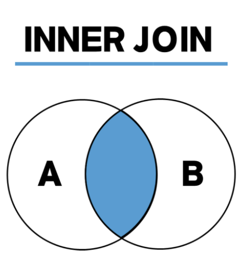

⚠️ 문제점
- 게시글에 대한 모든 댓글을 가져와 렌더링을 하려고 하면 시간이 O(N^2) time이 걸려 댓글이 많아질 수록 렌더링 속도가 급격하게 떨어진다.
- 기존에는 댓글을 Front-End 쪽으로 가져와 부모와 자식 계층을 DFS 방식으로 돌려 구현했다.
- 이렇게 되면
- CommentDTO에 자기 참조(self-referencing)을 위한 FK를 추가해준다.
@Getter @Setter public class CommentDTO { private long seq_comment; private long seq_board; // 보드 시퀀스 private String name; // 작성자 이름 private String commentContent; private Date logtime; private Long parentCommentSeq; // 부모 댓글 시퀀스 (null일 경우 일반 댓글, 값이 있을 경우 대댓글) } - DB에 속성 추가

ALTER TABLE CommentTable ADD COLUMN parentCommentSeq INT NULL; ALTER TABLE CommentTable ADD CONSTRAINT fk_parent_comment FOREIGN KEY (parentCommentSeq) REFERENCES CommentTable(seq_comment) ON DELETE CASCADE;- 기본적으로 NULL로 설정을 해준다.
- parentCommentSeq가 seq_comment를 참조하는 방식으로 자기 참조를 해준다.
- 이러면 parentCommentSeq에 부모 키가 저장이 된다.
- 부모키가 없는 상태인
parentCommentSeq=null이면 부모 댓글이 없다는 것을 의미하기 때문에 답글이 아닌 것이다. ON DELETE CASCADE를 통해 부모 댓글이 삭제되었을 때, 그 댓글을 부모로 참조하는 대댓글도 자동으로 삭제된다는 의미한다.
- CommentTable에 입력 쿼리
INSERT INTO CommentTable (seq_board, name, commentContent, parentCommentSeq) VALUES (#{seq_board}, #{name}, #{commentContent}, #{parentCommentSeq})- 입력에는 크게 달라진 거 없이 client에서 parentCommentSeq를 보내면 db 넣고 아니면 null인 상태가 된다.
- ⭐ CommentTable 댓글 조회 쿼리
전체 쿼리
WITH RECURSIVE CommentTree AS ( SELECT seq_comment, seq_board, name, commentContent, logtime, parentCommentSeq FROM CommentTable WHERE seq_board = #{seq_board} AND parentCommentSeq IS NULL UNION ALL SELECT c.seq_comment, c.seq_board, c.name, c.commentContent, c.logtime, c.parentCommentSeq FROM CommentTable c INNER JOIN CommentTree ct ON c.parentCommentSeq = ct.seq_comment ) SELECT * FROM CommentTree ORDER BY COALESCE(parentCommentSeq, seq_comment), -- 부모 댓글과 대댓글을 그룹화 seq_comment ASC, -- 부모 댓글 순서대로 정렬 logtime ASC -- 대댓글은 시간순 정렬- WITH RECURSIVE
WITH RECURSIVE CommentTree AS (WITH RECURSIVE구문은 재귀적으로 데이터를 조회할 때 사용된다.- 즉, 쿼리 내에서 자기 자신을 참조하면서 부모-자식 관계에 따라 데이터를 가져올 수 있다
- 계층적인 데이터 구조(트리)를 조회할 때 사용
- CommentTree는 이 재귀적인 조회 결과를 담을 임시 테이블
- 테이블에 부모 댓글과 대댓글이 모두 저장된다.
- 부모 댓글 조회
SELECT seq_comment, seq_board, name, commentContent, logtime, parentCommentSeq FROM CommentTable WHERE seq_board = #{seq_board} AND parentCommentSeq IS NULL- 해당 게시판의 댓글이고,
parentCommentSeq IS NULL이면 게시판의 부모 댓글만 조회한다.
- 해당 게시판의 댓글이고,
- 대댓글 조회
UNION ALL SELECT c.seq_comment, c.seq_board, c.name, c.commentContent, c.logtime, c.parentCommentSeq FROM CommentTable c INNER JOIN CommentTree ct ON c.parentCommentSeq = ct.seq_comment- 이 부분이 재귀적인 쿼리이다.
INNER JOIN을 통해 대댓글을 가져온다. INNER JOIN은 두 테이블(혹은 서브쿼리 결과) 간의 연결된 데이터만을 가져오기 때문에, 연관된 레코드들만 조회하며, 부모-자식 관계가 성립하지 않는 데이터는 제외한다.
CommentTree에 저장된 부모 댓글을 기반으로, 그 부모 댓글의seq_comment가 부모 댓글 번호(parentCommentSeq)인 대댓글을 찾아 연결한다.c.parentCommentSeq = ct.seq_comment를 통해 CommentTree인 ct의 seq_comment와 CommentTable인 parentCommentSeq가 연결된 대댓글을 찾는다.
- 이 부분이 재귀적인 쿼리이다.
- 전체 트리 조회
SELECT * FROM CommentTree ORDER BY COALESCE(parentCommentSeq, seq_comment), -- 부모 댓글과 대댓글을 그룹화 seq_comment ASC, -- 부모 댓글 순서대로 정렬 logtime ASC -- 대댓글은 시간순 정렬- COALESCE(parentCommentSeq, seq_comment)
COALESCE는NULL값을 처리할 때 사용된다.SELECT COALESCE(칼럼1, 칼럼2, 칼럼3, ... , 칼럼 N, ...) FROM table;- 칼럼1이 NULL이 아니면 칼럼1을 반환되고 NULL이면 칼럼2를 반환
parentCommentSeq가NULL이면 부모 댓글이고, 그렇지 않으면 대댓글이다.- 부모 댓글과 대댓글을 묶기 위한 정렬에 사용된다.
parentCommentSeq가NULL인 부모 댓글을 먼저 정렬하고, 그 아래에 대댓글을parentCommentSeq를 기준으로 묶는다.
- seq_comment ASC
- 부모 댓글 순서대로 정렬
- logtime ASC
- 대댓글을 시간순으로 정렬
- COALESCE(parentCommentSeq, seq_comment)
- WITH RECURSIVE
- CommentController 로 데이터 넘김
@Controller @RequestMapping("/comment") public class CommentController { @Autowired private CommentService commentService; ../ @RequestMapping(value = "/commentList", method = RequestMethod.POST) @ResponseBody public List<CommentDTO> commentList(@RequestParam("seq_board") String seq_board) { return commentService.commentList(seq_board); } ../ } - javascript로 댓글 랜더링하기
전체 코드
function buildCommentTree(comments, parentSeq = null) { const result = []; comments.forEach(function(comment) { if (comment.parentCommentSeq === parentSeq) { // 부모 댓글을 먼저 추가하고 그 아래에 대댓글을 추가 const newComment = Object.assign({}, comment, { replies: buildCommentTree(comments, comment.seq_comment) // 재귀적으로 대댓글 처리 }); result.push(newComment); } }); return result; } // 댓글 로드 $.ajax({ type: 'POST', url: '/Inbeomstagram/comment/commentList', data: { seq_board: seqBoard }, // seq_board를 실제 값으로 설정 success: function(commentList) { // 트리 구조로 댓글 재구성 const commentTree = buildCommentTree(commentList); // 댓글 HTML 생성 function renderComments(comments) { let commentHtml = ''; comments.forEach(function(comment) { commentHtml += '<div class="comment-content" data-seq="' + comment.seq_comment + '">' + '<strong>' + comment.name + '</strong> : ' + comment.commentContent + ' (' + formatDate(comment.logtime) + ')'; if (memberName === comment.name) { commentHtml += '<button class="options-btn" data-seq="' + comment.seq_comment + '">⋯</button>'; } // 답글 달기 버튼 추가 commentHtml += '<button class="reply-btn" data-seq="' + comment.seq_comment + '">답글 달기</button>'; commentHtml += '</div>'; // 부모 댓글 div 닫기 // 대댓글이 있는 경우 if (comment.replies.length > 0) { commentHtml += '<div class="reply-list" style="margin-left: 30px;">'; // 대댓글 들여쓰기 commentHtml += renderComments(comment.replies); // 재귀적으로 대댓글 추가 commentHtml += '</div>'; // 대댓글 목록 div 닫기 } }); return commentHtml; } // 동적으로 comment-list에 삽입 const commentHtml = renderComments(commentTree); $('#comment-list').html(commentHtml); $('#comment-num').text('댓글 ' + commentList.length + '개'); }, error: function() { alert('댓글을 불러오는 데 실패했습니다.'); } });- buildCommentTree 함수 → DFS 적용
function buildCommentTree(comments, parentSeq = null) { const result = []; comments.forEach(function(comment) { if (comment.parentCommentSeq === parentSeq) { // 부모 댓글을 먼저 추가하고 그 아래에 대댓글을 추가 const newComment = Object.assign({}, comment, { replies: buildCommentTree(comments, comment.seq_comment) // 재귀적으로 대댓글 처리 }); result.push(newComment); } }); return result; }- 댓글과 대댓글을 트리 구조로 만들기 위한 함수이다.
- 매개변수
comments: 전체 댓글 목록parentSeq: 부모 댓글의seq_comment값. 대댓글을 가져오기 위해 부모 댓글의 시퀀스 번호를 기준으로 재귀적으로 탐색합니다.
- 작동 방식
parentCommentSeq가null인 부모 댓글을 먼저 찾고, 그 댓글에 연결된 대댓글을 재귀적으로 찾아서 트리 구조를 만든다.Object.assign({}, comment, { replies: ... })를 사용하여 댓글에 대댓글(replies) 배열을 추가한다.- 즉, 각 댓글 객체는
replies속성에 자신에게 연결된 대댓글들을 갖게 된다.
- 즉, 각 댓글 객체는
- 재귀 호출: 부모 댓글의 시퀀스(
comment.seq_comment)를 기준으로 대댓글을 찾아서replies에 추가하는 구조이다.
추가적 설명 가장 먼저, 댓글 데이터(
comments)가 다음과 같은 배열 형태로 주어진다고 가정const comments = [ { seq_comment: 1, parentCommentSeq: null, commentContent: "부모 댓글 1" }, { seq_comment: 2, parentCommentSeq: 1, commentContent: "대댓글 1-1" }, { seq_comment: 3, parentCommentSeq: 1, commentContent: "대댓글 1-2" }, { seq_comment: 4, parentCommentSeq: null, commentContent: "부모 댓글 2" }, { seq_comment: 5, parentCommentSeq: 4, commentContent: "대댓글 2-1" }, { seq_comment: 6, parentCommentSeq: 5, commentContent: "대댓글 2-1-1" } ];- 부모 댓글 찾기
buildCommentTree(comments, null);parentSeq가null인 댓글을 찾는다.- 결과: 부모 댓글 1과 부모 댓글 2가 트리의 최상위에 위치합니다.
result = [ { seq_comment: 1, parentCommentSeq: null, commentContent: "부모 댓글 1", replies: [...] }, { seq_comment: 4, parentCommentSeq: null, commentContent: "부모 댓글 2", replies: [...] } ];
- 대댓글 찾기
- 이제, 각각의 부모 댓글에 대해 재귀적으로 대댓글을 찾는다.
- 부모 댓글 1에 연결된 대댓글을 찾습니다.
parentCommentSeq가1인 대댓글을 찾습니다. 대댓글 1-1과 대댓글 1-2가 이에 해당합니다.replies for seq_comment 1 = [ { seq_comment: 2, parentCommentSeq: 1, commentContent: "대댓글 1-1", replies: [] }, { seq_comment: 3, parentCommentSeq: 1, commentContent: "대댓글 1-2", replies: [] } ]; - 부모 댓글 2에 연결된 대댓글을 찾습니다.
parentCommentSeq가4인 대댓글 2-1을 찾습니다. 이어서 대댓글 2-1-1이 대댓글 2-1의 자식임을 확인하고 다시 재귀 호출하여 트리 구조를 완성합니다.replies for seq_comment 4 = [ { seq_comment: 5, parentCommentSeq: 4, commentContent: "대댓글 2-1", replies: [ { seq_comment: 6, parentCommentSeq: 5, commentContent: "대댓글 2-1-1", replies: [] } ]} ];
- 최종 결과: 트리 구조
[ { seq_comment: 1, parentCommentSeq: null, commentContent: "부모 댓글 1", replies: [ { seq_comment: 2, parentCommentSeq: 1, commentContent: "대댓글 1-1", replies: [] }, { seq_comment: 3, parentCommentSeq: 1, commentContent: "대댓글 1-2", replies: [] } ] }, { seq_comment: 4, parentCommentSeq: null, commentContent: "부모 댓글 2", replies: [ { seq_comment: 5, parentCommentSeq: 4, commentContent: "대댓글 2-1", replies: [ { seq_comment: 6, parentCommentSeq: 5, commentContent: "대댓글 2-1-1", replies: [] } ] } ] } ] 부모 댓글 1 |_ 대댓글 1-1 |_ 대댓글 1-2 부모 댓글 2 |_ 대댓글 2-1 |_ 대댓글 2-1-1
- 댓글 목록을 서버에서 AJAX로 로드
$.ajax({ type: 'POST', url: '/Inbeomstagram/comment/commentList', data: { seq_board: seqBoard }, // seq_board를 실제 값으로 설정 success: function(commentList) { // 트리 구조로 댓글 재구성 const commentTree = buildCommentTree(commentList); // 댓글 HTML 생성 const commentHtml = renderComments(commentTree); $('#comment-list').html(commentHtml); $('#comment-num').text('댓글 ' + commentList.length + '개'); }, error: function() { alert('댓글을 불러오는 데 실패했습니다.'); } });- 서버로부터 댓글 목록(
commentList)을 응답으로 받으면, 그 목록을buildCommentTree함수로 트리 구조로 변환한다. - 변환된 댓글 트리를
renderComments함수를 통해 HTML로 변환하여 화면에 업데이트한다.
- 서버로부터 댓글 목록(
- renderComments 함수 : 댓글을 HTML로 변환
function renderComments(comments) { let commentHtml = ''; comments.forEach(function(comment) { commentHtml += '<div class="comment-content" data-seq="' + comment.seq_comment + '">' + '<strong>' + comment.name + '</strong> : ' + comment.commentContent + ' (' + formatDate(comment.logtime) + ')'; if (memberName === comment.name) { commentHtml += '<button class="options-btn" data-seq="' + comment.seq_comment + '">⋯</button>'; } // 답글 달기 버튼 추가 commentHtml += '<button class="reply-btn" data-seq="' + comment.seq_comment + '">답글 달기</button>'; commentHtml += '</div>'; // 부모 댓글 div 닫기 // 대댓글이 있는 경우 if (comment.replies.length > 0) { commentHtml += '<div class="reply-list" style="margin-left: 30px;">'; // 대댓글 들여쓰기 commentHtml += renderComments(comment.replies); // 재귀적으로 대댓글 추가 commentHtml += '</div>'; // 대댓글 목록 div 닫기 } }); return commentHtml; }- 매개변수인
comments는buildCommentTree함수에서 트리로 변환된 댓글 목록을 반환한다. - 재귀 호출
- 댓글 아래에 대댓글이 존재하면(
comment.replies.length > 0)- ⭐ 대댓글을 다시
renderComments함수로 재귀적으로 호출하여, 대댓글이 부모 댓글 아래에 계층적으로 표시되도록 한다. - 대댓글은 **들여쓰기(
margin-left: 30px)**를 통해 시각적으로 부모 댓글과 구분
- ⭐ 대댓글을 다시
- 댓글 아래에 대댓글이 존재하면(
- 매개변수인
- 댓글 HTML을 동적으로 삽입
// 동적으로 comment-list에 삽입 const commentHtml = renderComments(commentTree); $('#comment-list').html(commentHtml); $('#comment-num').text('댓글 ' + commentList.length + '개');
- buildCommentTree 함수 → DFS 적용
정리
- SQL문의 역할 : 부모 댓글과 대댓글을 계층 관계에 맞게 정렬된 리스트로 반환
- 트리로 반환 x
- javascript의 역할 : 트리구조로 변환하여 랜더링
- 기존 O(N^2) time에서 O(NlogN)으로 시간 단축을 시켰다.
트리 구조로 변환하는 이유
트리 구조는 부모-자식 관계가 있는 데이터를 계층적으로 표현할 때 필요
예시
댓글 예시:
부모 댓글 1
대댓글 1-1
대댓글 1-2
부모 댓글 2
대댓글 2-1
대댓글 2-1-1
대댓글 2-2이런 관계를 리스트 형태로만 처리할 경우, 대댓글이 부모 댓글과 직접적으로 연결된 상태로 보기 어렵고, 계층적으로 누구의 자식인지가 분명하지 않을 수 있습니다.
리스트 형태만으로는 문제점
- 대댓글의 대댓글이 있는 경우
[ { "seq_comment": 1, "parentCommentSeq": null, "commentContent": "부모 댓글 1" }, { "seq_comment": 2, "parentCommentSeq": 1, "commentContent": "대댓글 1-1" }, { "seq_comment": 3, "parentCommentSeq": 1, "commentContent": "대댓글 1-2" }, { "seq_comment": 4, "parentCommentSeq": 3, "commentContent": "대댓글 1-2-1" }, { "seq_comment": 5, "parentCommentSeq": 4, "commentContent": "대댓글 1-2-1-1" }, { "seq_comment": 6, "parentCommentSeq": 5, "commentContent": "대댓글 1-2-1-1-1" }, { "seq_comment": 7, "parentCommentSeq": 1, "commentContent": "대댓글 1-3" }, { "seq_comment": 8, "parentCommentSeq": null, "commentContent": "부모 댓글 2" }, { "seq_comment": 9, "parentCommentSeq": 8, "commentContent": "대댓글 2-1" }, { "seq_comment": 10, "parentCommentSeq": 9, "commentContent": "대댓글 2-1-1" }, { "seq_comment": 11, "parentCommentSeq": 9, "commentContent": "대댓글 2-1-2" }, { "seq_comment": 12, "parentCommentSeq": 11, "commentContent": "대댓글 2-1-2-1" }, { "seq_comment": 13, "parentCommentSeq": 8, "commentContent": "대댓글 2-2" }, { "seq_comment": 14, "parentCommentSeq": 8, "commentContent": "대댓글 2-3" } ]- 대댓글의 대댓글처럼 여러 단계로 깊어질 경우, 댓글의 관계를 일일이 추적해야 하기 때문에 리스트만으로는 빠르게 이해하기 어렵다.
- 대댓글 1-2-1-1-1 같은 경우, 그것이 부모 댓글 1의 자식 대댓글이라는 것을 리스트에서 계속 따라가며 봐야 한다.
parentCommentSeq가 5라는 정보를 보고, 그 부모가 4라는 것을 다시 확인하고, 4가 3이라는 것을 확인하는 식으로 재귀적으로 찾아가야 관계를 알 수 있다.
SQL에서 트리 구조로 변환할 순 없나?
- 관계형 데이터베이스이므로, 데이터를 테이블 형태로 정리하는 데 적합하지만, 트리 구조처럼 중첩된 데이터 구조를 생성하는 것�� 본질적으로 SQL의 역할과는 다르다.
- SQL은 기본적으로 행(row) 기반으로 데이터를 처리하기 때문에 중첩된 데이터를 직접 생성하는 데는 한계가 있다.
- 부모-자식 관계는 별도의 열(column) 값으로 표시될 수 있지만, 각 부모-자식 관계를 중첩된 형태로 표현하기는 어렵다.
해당 구조가 최선의 방식인가?
- 일단 트리구조이기 때문에 javascript에서 모두 처리가 가능하긴 하다.
- 하지만 sql에서 조회한 때, select * from commenttable where seq_comment = seq_parentcomment로 O(1) time에 조회할 수 있지만, javascript 상에서 부모를 조회할 시 O(N) time에 부모 comment를 찾기 때문에 비효율 적이다.
- 또한 데이터 베이스에서 미리 정렬을 하여 역할 분담을 하는 것이 서버(현재는 tomcat)에 부담이 덜하기 때문에 역할을 나누는 것이 좋을 거 같다는 생각이다.
예시
[
{ "seq_comment": 1, "parentCommentSeq": null, "commentContent": "부모 댓글 1" },
{ "seq_comment": 2, "parentCommentSeq": 8, "commentContent": "대댓글 1-1" }, // 대댓글이 부모 댓글 2의 자식으로 이동
{ "seq_comment": 3, "parentCommentSeq": 1, "commentContent": "대댓글 1-2" },
{ "seq_comment": 4, "parentCommentSeq": 7, "commentContent": "대댓글 1-2-1" }, // 대댓글 1-3의 자식으로 이동
{ "seq_comment": 5, "parentCommentSeq": 2, "commentContent": "대댓글 1-2-1-1" }, // 대댓글이 대댓글 1-1의 자식으로 이동
{ "seq_comment": 6, "parentCommentSeq": 5, "commentContent": "대댓글 1-2-1-1-1" },
{ "seq_comment": 7, "parentCommentSeq": 1, "commentContent": "대댓글 1-3" },
{ "seq_comment": 8, "parentCommentSeq": null, "commentContent": "부모 댓글 2" },
{ "seq_comment": 9, "parentCommentSeq": 3, "commentContent": "대댓글 2-1" }, // 대댓글 1-2의 자식으로 이동
{ "seq_comment": 10, "parentCommentSeq": 9, "commentContent": "대댓글 2-1-1" },
{ "seq_comment": 11, "parentCommentSeq": 8, "commentContent": "대댓글 2-1-2" },
{ "seq_comment": 12, "parentCommentSeq": 11, "commentContent": "대댓글 2-1-2-1" },
{ "seq_comment": 13, "parentCommentSeq": 9, "commentContent": "대댓글 2-2" }, // 대댓글 2-1의 자식으로 이동
{ "seq_comment": 14, "parentCommentSeq": 13, "commentContent": "대댓글 2-3" } // 대댓글 2-2의 자식으로 이동
]
- sql 정렬후
[
{ "seq_comment": 1, "parentCommentSeq": null, "commentContent": "부모 댓글 1" },
{ "seq_comment": 3, "parentCommentSeq": 1, "commentContent": "대댓글 1-2" },
{ "seq_comment": 9, "parentCommentSeq": 3, "commentContent": "대댓글 2-1" },
{ "seq_comment": 10, "parentCommentSeq": 9, "commentContent": "대댓글 2-1-1" },
{ "seq_comment": 13, "parentCommentSeq": 9, "commentContent": "대댓글 2-2" },
{ "seq_comment": 14, "parentCommentSeq": 13, "commentContent": "대댓글 2-3" },
{ "seq_comment": 4, "parentCommentSeq": 7, "commentContent": "대댓글 1-2-1" }, // 원래의 자리가 아님
{ "seq_comment": 7, "parentCommentSeq": 1, "commentContent": "대댓글 1-3" },
{ "seq_comment": 5, "parentCommentSeq": 2, "commentContent": "대댓글 1-2-1-1" }, // 엉킨 상태 유지
{ "seq_comment": 6, "parentCommentSeq": 5, "commentContent": "대댓글 1-2-1-1-1" }, // 엉킨 상태 유지
{ "seq_comment": 8, "parentCommentSeq": null, "commentContent": "부모 댓글 2" },
{ "seq_comment": 2, "parentCommentSeq": 8, "commentContent": "대댓글 1-1" },
{ "seq_comment": 11, "parentCommentSeq": 8, "commentContent": "대댓글 2-1-2" },
{ "seq_comment": 12, "parentCommentSeq": 11, "commentContent": "대댓글 2-1-2-1" }
]- 부모 댓글을 찾는다 → seq_comment : 1
- parentCommentSeq가 1인 것을 찾는다. → seq_comment : 3
- parentCommentSeq가 3인 것을 찾는다. → seq_comment : 10 / seq_comment : 13 / seq_comment : 14
- …. ⇒ 이미 정렬이 완벽히 된 상태는 아니다.